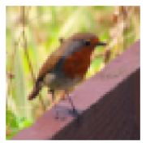
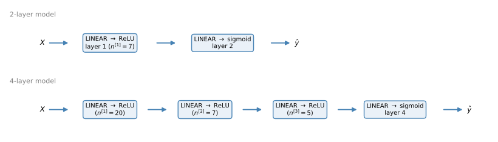
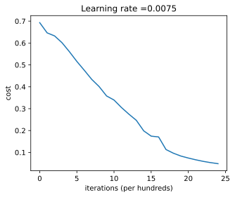
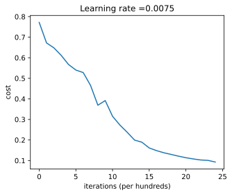
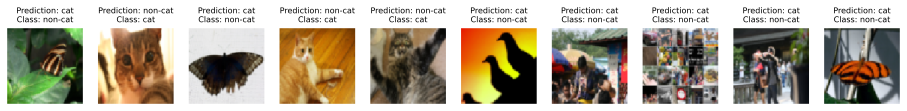

import numpy as np
import h5py
import matplotlib.pyplot as plt
from PIL import Image
plt.rcParams['figure.figsize'] = (5.0, 4.0)
plt.rcParams['image.interpolation'] = 'nearest'
plt.rcParams['image.cmap'] = 'gray'
np.random.seed(1)Lab: Deep Neural Network for Image Classification
deep-learning
neural-networks
image-classification
numpy
lab
Assemble the step-by-step functions into a 2-layer and a 4-layer cat classifier, train both, and compare them against logistic regression.
This is the last programming assignment of the course. To build a cat vs non-cat classifier, you use the functions from the previous assignment to build a deep network, and hopefully see an improvement in accuracy over the logistic regression implementation, which reached 70% on the test set.
After this assignment you will be able to build and train a deep \(L\) layer neural network and apply it to supervised learning.
Packages
Every building block was implemented in the previous lab, so this page imports nothing new; the functions are simply redefined here, collapsed for reference. In the original assignment they ship in a helper file, dnn_app_utils_v3.py.
NoteLab Files Download
Everything this lab needs, ready to download.
- train_catvnoncat.h5 (2.5 MB) and test_catvnoncat.h5 (0.6 MB), the cat vs non-cat image dataset
- dnn_app_utils_v3.py (15 KB), the helper functions from the step-by-step lab plus the dataset loader
- public_tests.py (9 KB) and test_utils.py (6 KB), the graded exercise checks
To run the original notebook outside this page, put the two H5 files in a datasets/ folder next to the .py files, matching the layout that dnn_app_utils_v3.load_data() expects.
NoteHelper Functions from the Previous Lab
def sigmoid(Z):
A = 1 / (1 + np.exp(-Z))
return A, Z
def relu(Z):
A = np.maximum(0, Z)
return A, Z
def sigmoid_backward(dA, cache):
Z = cache
s = 1 / (1 + np.exp(-Z))
return dA * s * (1 - s)
def relu_backward(dA, cache):
Z = cache
dZ = np.array(dA, copy=True)
dZ[Z <= 0] = 0
return dZ
def initialize_parameters(n_x, n_h, n_y):
np.random.seed(1)
W1 = np.random.randn(n_h, n_x) * 0.01
b1 = np.zeros((n_h, 1))
W2 = np.random.randn(n_y, n_h) * 0.01
b2 = np.zeros((n_y, 1))
return {"W1": W1, "b1": b1, "W2": W2, "b2": b2}
def initialize_parameters_deep(layer_dims):
np.random.seed(1)
parameters = {}
L = len(layer_dims)
for l in range(1, L):
parameters['W' + str(l)] = np.random.randn(layer_dims[l], layer_dims[l - 1]) / np.sqrt(layer_dims[l - 1])
parameters['b' + str(l)] = np.zeros((layer_dims[l], 1))
return parameters
def linear_forward(A, W, b):
Z = np.dot(W, A) + b
return Z, (A, W, b)
def linear_activation_forward(A_prev, W, b, activation):
Z, linear_cache = linear_forward(A_prev, W, b)
if activation == "sigmoid":
A, activation_cache = sigmoid(Z)
elif activation == "relu":
A, activation_cache = relu(Z)
return A, (linear_cache, activation_cache)
def L_model_forward(X, parameters):
caches = []
A = X
L = len(parameters) // 2
for l in range(1, L):
A_prev = A
A, cache = linear_activation_forward(A_prev, parameters['W' + str(l)], parameters['b' + str(l)], "relu")
caches.append(cache)
AL, cache = linear_activation_forward(A, parameters['W' + str(L)], parameters['b' + str(L)], "sigmoid")
caches.append(cache)
return AL, caches
def compute_cost(AL, Y):
m = Y.shape[1]
cost = -1 / m * np.sum(Y * np.log(AL) + (1 - Y) * np.log(1 - AL))
return np.squeeze(cost)
def linear_backward(dZ, cache):
A_prev, W, b = cache
m = A_prev.shape[1]
dW = 1 / m * np.dot(dZ, A_prev.T)
db = 1 / m * np.sum(dZ, axis=1, keepdims=True)
dA_prev = np.dot(W.T, dZ)
return dA_prev, dW, db
def linear_activation_backward(dA, cache, activation):
linear_cache, activation_cache = cache
if activation == "relu":
dZ = relu_backward(dA, activation_cache)
elif activation == "sigmoid":
dZ = sigmoid_backward(dA, activation_cache)
return linear_backward(dZ, linear_cache)
def L_model_backward(AL, Y, caches):
grads = {}
L = len(caches)
Y = Y.reshape(AL.shape)
dAL = -(np.divide(Y, AL) - np.divide(1 - Y, 1 - AL))
current_cache = caches[L - 1]
dA_prev_temp, dW_temp, db_temp = linear_activation_backward(dAL, current_cache, "sigmoid")
grads["dA" + str(L - 1)] = dA_prev_temp
grads["dW" + str(L)] = dW_temp
grads["db" + str(L)] = db_temp
for l in reversed(range(L - 1)):
current_cache = caches[l]
dA_prev_temp, dW_temp, db_temp = linear_activation_backward(grads["dA" + str(l + 1)], current_cache, "relu")
grads["dA" + str(l)] = dA_prev_temp
grads["dW" + str(l + 1)] = dW_temp
grads["db" + str(l + 1)] = db_temp
return grads
def update_parameters(params, grads, learning_rate):
import copy
parameters = copy.deepcopy(params)
L = len(parameters) // 2
for l in range(L):
parameters["W" + str(l + 1)] = parameters["W" + str(l + 1)] - learning_rate * grads["dW" + str(l + 1)]
parameters["b" + str(l + 1)] = parameters["b" + str(l + 1)] - learning_rate * grads["db" + str(l + 1)]
return parameters
def load_data():
train_dataset = h5py.File('../../media/deep-learning/catvnoncat/train_catvnoncat.h5', "r")
train_set_x_orig = np.array(train_dataset["train_set_x"][:])
train_set_y_orig = np.array(train_dataset["train_set_y"][:])
test_dataset = h5py.File('../../media/deep-learning/catvnoncat/test_catvnoncat.h5', "r")
test_set_x_orig = np.array(test_dataset["test_set_x"][:])
test_set_y_orig = np.array(test_dataset["test_set_y"][:])
classes = np.array(test_dataset["list_classes"][:])
train_set_y_orig = train_set_y_orig.reshape((1, train_set_y_orig.shape[0]))
test_set_y_orig = test_set_y_orig.reshape((1, test_set_y_orig.shape[0]))
return train_set_x_orig, train_set_y_orig, test_set_x_orig, test_set_y_orig, classesOne detail worth noticing inside the callout. initialize_parameters_deep here scales the random weights by \(1/\sqrt{n^{[l-1]}}\) rather than by 0.01. This is the assignment’s provided version; for deeper networks, a plain 0.01 makes the signal shrink layer by layer and training stalls, and the random initialization section already hinted that better constants than 0.01 exist. The second course explains this choice properly.
Two helpers are genuinely new. predict runs L_model_forward and thresholds the probabilities at 0.5, printing the accuracy along the way, and print_mislabeled_images displays the test images the model got wrong.
def predict(X, y, parameters):
"""
This function is used to predict the results of a L-layer neural network.
Arguments:
X -- data set of examples you would like to label
parameters -- parameters of the trained model
Returns:
p -- predictions for the given dataset X
"""
m = X.shape[1]
p = np.zeros((1, m))
# Forward propagation
probas, caches = L_model_forward(X, parameters)
# convert probas to 0/1 predictions
for i in range(0, probas.shape[1]):
if probas[0, i] > 0.5:
p[0, i] = 1
else:
p[0, i] = 0
print("Accuracy: " + str(np.sum((p == y) / m)))
return p
def print_mislabeled_images(classes, X, y, p):
"""
Plots images where predictions and truth were different.
X -- dataset
y -- true labels
p -- predictions
"""
a = p + y
mislabeled_indices = np.asarray(np.where(a == 1))
plt.rcParams['figure.figsize'] = (16.0, 4.0)
num_images = len(mislabeled_indices[0])
for i in range(num_images):
index = mislabeled_indices[1][i]
plt.subplot(2, num_images, i + 1)
plt.imshow(X[:, index].reshape(64, 64, 3), interpolation='nearest')
plt.axis('off')
plt.title("Prediction: " + classes[int(p[0, index])].decode("utf-8") +
"\nClass: " + classes[y[0, index]].decode("utf-8"), fontsize=8)Load and Process the Dataset
This is the same cat vs non-cat dataset as in the logistic regression lab, available for download as train_catvnoncat.h5 (2.5 MB) and test_catvnoncat.h5 (0.6 MB). It contains m_train training images and m_test test images labeled cat (1) or non-cat (0), each of shape (num_px, num_px, 3). The model built back then had 70% test accuracy; hopefully the new models perform even better.
train_x_orig, train_y, test_x_orig, test_y, classes = load_data()
# Example of a picture
index = 10
plt.figure(figsize=(3, 3))
plt.imshow(train_x_orig[index])
plt.axis('off')
plt.show()
print("y = " + str(train_y[0, index]) + ". It's a " + classes[train_y[0, index]].decode("utf-8") + " picture.")
y = 0. It's a non-cat picture.# Explore your dataset
m_train = train_x_orig.shape[0]
num_px = train_x_orig.shape[1]
m_test = test_x_orig.shape[0]
print("Number of training examples: " + str(m_train))
print("Number of testing examples: " + str(m_test))
print("Each image is of size: (" + str(num_px) + ", " + str(num_px) + ", 3)")
print("train_x_orig shape: " + str(train_x_orig.shape))
print("train_y shape: " + str(train_y.shape))
print("test_x_orig shape: " + str(test_x_orig.shape))
print("test_y shape: " + str(test_y.shape))Number of training examples: 209
Number of testing examples: 50
Each image is of size: (64, 64, 3)
train_x_orig shape: (209, 64, 64, 3)
train_y shape: (1, 209)
test_x_orig shape: (50, 64, 64, 3)
test_y shape: (1, 50)As usual, reshape and standardize the images before feeding them to the network. Each (64, 64, 3) image unrolls into a column vector, and the pixel values are scaled to sit between 0 and 1.
# Reshape the training and test examples
train_x_flatten = train_x_orig.reshape(train_x_orig.shape[0], -1).T # The "-1" makes reshape flatten the remaining dimensions
test_x_flatten = test_x_orig.reshape(test_x_orig.shape[0], -1).T
# Standardize data to have feature values between 0 and 1.
train_x = train_x_flatten / 255.
test_x = test_x_flatten / 255.
print("train_x's shape: " + str(train_x.shape))
print("test_x's shape: " + str(test_x.shape))train_x's shape: (12288, 209)
test_x's shape: (12288, 50)Note that \(12{,}288\) equals \(64 \times 64 \times 3\), the size of one reshaped image vector.
Model Architecture
You build two different models, a 2 layer neural network and an \(L\) layer deep neural network, and then compare their performance.

2 layer network. The input (64, 64, 3) image is flattened to a vector of size \((12288, 1)\). That vector is multiplied by the weight matrix \(W^{[1]}\) of size \((n^{[1]}, 12288)\), a bias is added, and a ReLU produces the hidden activations. Multiplying by \(W^{[2]}\), adding the bias, and taking the sigmoid gives the output; if it is greater than 0.5, the image is classified as a cat. In short, INPUT → LINEAR → RELU → LINEAR → SIGMOID → OUTPUT.
L layer network. The same pattern with the ReLU step repeated once per hidden layer, [LINEAR → RELU] \(\times\) (L-1) → LINEAR → SIGMOID, exactly the model L_model_forward implements.
General methodology. As usual,
- initialize the parameters and define the hyperparameters,
- loop
num_iterationstimes over forward propagation, the cost, backward propagation, and the parameter update, - use the trained parameters to predict labels.
Two-Layer Neural Network
Build the 2 layer model out of the previous lab’s functions, in the right order. initialize_parameters sets up \(W^{[1]}, b^{[1]}, W^{[2]}, b^{[2]}\), each iteration runs the two linear_activation_forward steps (ReLU then sigmoid), computes the cost, initializes dA2 from the loss derivative, runs the two linear_activation_backward steps in reverse, and updates the parameters.
### CONSTANTS DEFINING THE MODEL ####
n_x = 12288 # num_px * num_px * 3
n_h = 7
n_y = 1
layers_dims = (n_x, n_h, n_y)
learning_rate = 0.0075
def two_layer_model(X, Y, layers_dims, learning_rate=0.0075, num_iterations=3000, print_cost=False):
"""
Implements a two-layer neural network: LINEAR->RELU->LINEAR->SIGMOID.
Arguments:
X -- input data, of shape (n_x, number of examples)
Y -- true "label" vector (containing 1 if cat, 0 if non-cat), of shape (1, number of examples)
layers_dims -- dimensions of the layers (n_x, n_h, n_y)
num_iterations -- number of iterations of the optimization loop
learning_rate -- learning rate of the gradient descent update rule
print_cost -- If set to True, this will print the cost every 100 iterations
Returns:
parameters -- a dictionary containing W1, W2, b1, and b2
"""
np.random.seed(1)
grads = {}
costs = []
m = X.shape[1]
(n_x, n_h, n_y) = layers_dims
# Initialize parameters dictionary
parameters = initialize_parameters(n_x, n_h, n_y)
# Get W1, b1, W2 and b2 from the dictionary parameters.
W1 = parameters["W1"]
b1 = parameters["b1"]
W2 = parameters["W2"]
b2 = parameters["b2"]
# Loop (gradient descent)
for i in range(0, num_iterations):
# Forward propagation: LINEAR -> RELU -> LINEAR -> SIGMOID
A1, cache1 = linear_activation_forward(X, W1, b1, "relu")
A2, cache2 = linear_activation_forward(A1, W2, b2, "sigmoid")
# Compute cost
cost = compute_cost(A2, Y)
# Initializing backward propagation
dA2 = - (np.divide(Y, A2) - np.divide(1 - Y, 1 - A2))
# Backward propagation
dA1, dW2, db2 = linear_activation_backward(dA2, cache2, "sigmoid")
dA0, dW1, db1 = linear_activation_backward(dA1, cache1, "relu")
grads['dW1'] = dW1
grads['db1'] = db1
grads['dW2'] = dW2
grads['db2'] = db2
# Update parameters
parameters = update_parameters(parameters, grads, learning_rate)
# Retrieve W1, b1, W2, b2 from parameters
W1 = parameters["W1"]
b1 = parameters["b1"]
W2 = parameters["W2"]
b2 = parameters["b2"]
# Print the cost every 100 iterations
if print_cost and i % 100 == 0 or i == num_iterations - 1:
print("Cost after iteration {}: {}".format(i, np.squeeze(cost)))
if i % 100 == 0 or i == num_iterations:
costs.append(cost)
return parameters, costs
def plot_costs(costs, learning_rate=0.0075):
plt.plot(np.squeeze(costs))
plt.ylabel('cost')
plt.xlabel('iterations (per hundreds)')
plt.title("Learning rate =" + str(learning_rate))
plt.show()Now train the model for 2,500 iterations. The cost after the first iteration should be around 0.69, the coin-flip cross entropy that a fresh random initialization produces. Good thing you built a vectorized implementation, otherwise this might have taken ten times as long.
parameters, costs = two_layer_model(train_x, train_y, layers_dims=(n_x, n_h, n_y), num_iterations=2500, print_cost=True)
plot_costs(costs, learning_rate)Cost after iteration 0: 0.693049735659989
Cost after iteration 100: 0.6464320953428848
Cost after iteration 200: 0.6325140647912677
Cost after iteration 300: 0.6015024920354664
Cost after iteration 400: 0.5601966311605747
Cost after iteration 500: 0.5158304772764731
Cost after iteration 600: 0.47549013139433255
Cost after iteration 700: 0.43391631512257517
Cost after iteration 800: 0.4007977536203879
Cost after iteration 900: 0.35807050113237954
Cost after iteration 1000: 0.33942815383664127
Cost after iteration 1100: 0.3052753636196271
Cost after iteration 1200: 0.27491377282130286
Cost after iteration 1300: 0.24681768210614757
Cost after iteration 1400: 0.19850735037466208
Cost after iteration 1500: 0.17448318112556596
Cost after iteration 1600: 0.17080762978097147
Cost after iteration 1700: 0.11306524562164803
Cost after iteration 1800: 0.09629426845937153
Cost after iteration 1900: 0.08342617959726896
Cost after iteration 2000: 0.07439078704319106
Cost after iteration 2100: 0.06630748132267944
Cost after iteration 2200: 0.059193295010381626
Cost after iteration 2300: 0.053361403485605585
Cost after iteration 2400: 0.04855478562877026
Cost after iteration 2499: 0.04421498215868949
predictions_train = predict(train_x, train_y, parameters)
predictions_test = predict(test_x, test_y, parameters)Accuracy: 0.9999999999999998
Accuracy: 0.72The 2 layer network reaches about 100% on the training set and 72% on the test set, already better than logistic regression’s 70%. One thing worth noticing. Running the model on fewer iterations (say 1,500) gives better accuracy on the test set. This is called early stopping, a way to prevent overfitting, and the next course says more about it.
L-Layer Neural Network
Now the same task with a 4 layer network, using the deep helper functions. The whole training loop collapses to four calls per iteration.
### CONSTANTS ###
layers_dims = [12288, 20, 7, 5, 1] # 4-layer model
def L_layer_model(X, Y, layers_dims, learning_rate=0.0075, num_iterations=3000, print_cost=False):
"""
Implements a L-layer neural network: [LINEAR->RELU]*(L-1)->LINEAR->SIGMOID.
Arguments:
X -- input data, of shape (n_x, number of examples)
Y -- true "label" vector (containing 1 if cat, 0 if non-cat), of shape (1, number of examples)
layers_dims -- list containing the input size and each layer size, of length (number of layers + 1).
learning_rate -- learning rate of the gradient descent update rule
num_iterations -- number of iterations of the optimization loop
print_cost -- if True, it prints the cost every 100 steps
Returns:
parameters -- parameters learned by the model. They can then be used to predict.
"""
np.random.seed(1)
costs = [] # keep track of cost
# Parameters initialization
parameters = initialize_parameters_deep(layers_dims)
# Loop (gradient descent)
for i in range(0, num_iterations):
# Forward propagation: [LINEAR -> RELU]*(L-1) -> LINEAR -> SIGMOID
AL, caches = L_model_forward(X, parameters)
# Compute cost
cost = compute_cost(AL, Y)
# Backward propagation
grads = L_model_backward(AL, Y, caches)
# Update parameters
parameters = update_parameters(parameters, grads, learning_rate)
# Print the cost every 100 iterations and for the last iteration
if print_cost and (i % 100 == 0 or i == num_iterations - 1):
print("Cost after iteration {}: {}".format(i, np.squeeze(cost)))
if i % 100 == 0:
costs.append(cost)
return parameters, costsTrain it for 2,500 iterations (the starting cost is around 0.77 this time, the deeper initialization lands somewhere else than the 2 layer one).
parameters, costs = L_layer_model(train_x, train_y, layers_dims, num_iterations=2500, print_cost=True)
plot_costs(costs, learning_rate)Cost after iteration 0: 0.7717493284237686
Cost after iteration 100: 0.6720534400822913
Cost after iteration 200: 0.6482632048575212
Cost after iteration 300: 0.6115068816101356
Cost after iteration 400: 0.5670473268366111
Cost after iteration 500: 0.54013766345478
Cost after iteration 600: 0.5279299569455267
Cost after iteration 700: 0.4654773771766853
Cost after iteration 800: 0.36912585249592794
Cost after iteration 900: 0.3917469743480533
Cost after iteration 1000: 0.3151869888600615
Cost after iteration 1100: 0.27269984417893883
Cost after iteration 1200: 0.23741853400268145
Cost after iteration 1300: 0.19960120532208636
Cost after iteration 1400: 0.18926300388463305
Cost after iteration 1500: 0.1611885466582775
Cost after iteration 1600: 0.14821389662363316
Cost after iteration 1700: 0.13777487812972944
Cost after iteration 1800: 0.12974017549190112
Cost after iteration 1900: 0.12122535068005202
Cost after iteration 2000: 0.11382060668633703
Cost after iteration 2100: 0.10783928526254136
Cost after iteration 2200: 0.10285466069352676
Cost after iteration 2300: 0.10089745445261775
Cost after iteration 2400: 0.0928782152647239
Cost after iteration 2499: 0.08843994344170196
pred_train = predict(train_x, train_y, parameters)
pred_test = predict(test_x, test_y, parameters)Accuracy: 0.9856459330143539
Accuracy: 0.8The 4 layer network reaches about 98.6% train accuracy and 80% test accuracy, better than the 2 layer network (72%) on the same test set. This is pretty good performance for this task. In the next course, systematically searching for better hyperparameters (learning_rate, layers_dims, num_iterations, and more) pushes the accuracy even higher.
Results Analysis
Look at some images the \(L\) layer model labeled incorrectly.
print_mislabeled_images(classes, test_x, test_y, pred_test)
A few types of images the model tends to do poorly on include
- cat body in an unusual position,
- cat appearing against a background of a similar color,
- unusual cat color and species,
- camera angle,
- brightness of the picture,
- scale variation (the cat is very large or small in the image).
Test with Your Own Image
Finally, feed the trained network a photo it has never seen. The image is resized to \(64 \times 64\), scaled to \([0, 1]\), and unrolled into a column vector, the same preprocessing the training images went through.
my_image = "my_image.jpg" # change this to the name of your image file
my_label_y = [1] # the true class of your image (1 -> cat, 0 -> non-cat)
fname = "../../media/deep-learning/catvnoncat/" + my_image
image = np.array(Image.open(fname).resize((num_px, num_px)))
plt.figure(figsize=(3, 3))
plt.imshow(image)
plt.axis('off')
plt.show()
image = image / 255.
image = image.reshape((1, num_px * num_px * 3)).T
my_predicted_image = predict(image, my_label_y, parameters)
print("y = " + str(np.squeeze(my_predicted_image)) + ", your L-layer model predicts a \"" +
classes[int(np.squeeze(my_predicted_image)),].decode("utf-8") + "\" picture.")Accuracy: 1.0
y = 1.0, your L-layer model predicts a "cat" picture.
NoteWhat to Remember
- The step-by-step functions compose directly into working models. The 2 layer model calls them by name, and the \(L\) layer model needs just four calls per iteration (
L_model_forward,compute_cost,L_model_backward,update_parameters). - Depth helped. Logistic regression reached 70% test accuracy, the 2 layer network 72%, and the 4 layer network 80%, on the same data with the same preprocessing.
- Fewer iterations can generalize better (early stopping), and deeper networks need a more careful weight initialization scale than 0.01.
This closes the course. You can now build, train, and apply deep \(L\) layer neural networks.
Review Questions
1. Rank logistic regression, the 2 layer network, and the 4 layer network by test accuracy on the cat dataset.
TipAnswer
Logistic regression reached 70%, the 2 layer network 72%, and the 4 layer network 80%. Same dataset, same preprocessing; the added depth is what improved the accuracy.
1. The training loop of L_layer_model contains only four function calls per iteration. Which are they, and what does each do?
TipAnswer
L_model_forward computes \(A^{[L]}\) and the caches, compute_cost measures how wrong the predictions are, L_model_backward turns the caches into all the gradients, and update_parameters applies the gradient descent step. Everything else was built in the previous lab.
1. What is early stopping, and where did it show up in this lab?
TipAnswer
Stopping training before the cost fully converges. Training the 2 layer model for around 1,500 iterations instead of 2,500 gives better test accuracy, because the extra iterations overfit the training set. It is one way to prevent overfitting, covered properly in the next course.
1. Why does the deep initialization scale weights by \(1/\sqrt{n^{[l-1]}}\) instead of 0.01?
TipAnswer
With several layers, multiplying by weights scaled at a flat 0.01 shrinks the activations layer after layer and gradient descent stalls. Scaling by \(1/\sqrt{n^{[l-1]}}\) keeps the size of each layer’s output roughly stable regardless of how many inputs feed it. Choosing initialization scales is treated systematically in the second course.
1. What kinds of test images does the trained model tend to get wrong?
TipAnswer
Cats in unusual positions, cats against backgrounds of a similar color, unusual cat colors and species, odd camera angles, very bright or dark pictures, and large scale variation.